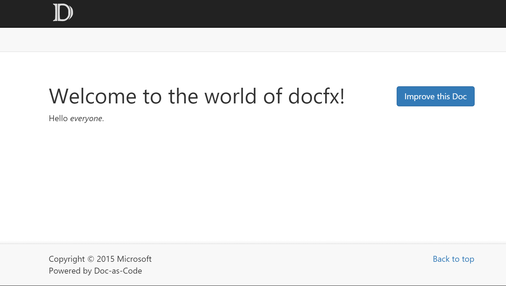
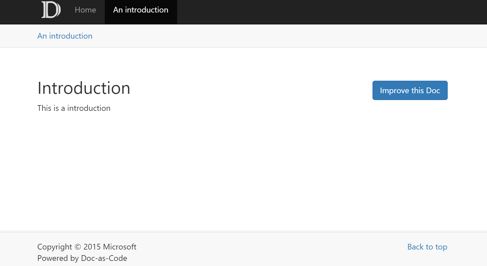

Walkthrough Part I: Generate a Simple Documentation Website
By completing this walkthrough, you'll become familiar with the workflow of docfx and the general principle of organizing documents inside docfx. You will finish this walkthrough with a static website that can be published to any host service. Download the files used in this walkthrough here.
Step1. Setup docfx
Download docfx from http://dotnet.github.io/docfx/. Getting Started with docfx describes 3 ways to install docfx. This walkthrough uses the first one: use docfx.exe directly.
- Download docfx.zip and unzip it to
D:\docfx\ - Add
D:\docfx\toPATHso that commanddocfxand be directly called from everywhere for convenience. E.g. for Windows,setx PATH "%PATH%;D:\docfx\"
Step2. Init a docfx project
- Create a new folder
D:\docfx_walkthrough - Start Command Line under
D:\docfx_walkthrough - Call
docfx init -q. This command generates adocfx.jsonfile under the same folder.docfx.jsonis the configuration filedocfxuses to generate documentation.-qoption means generatingdocfx.jsonquitely using default value, you can also trydocfx initand follow the instructions to provide your own settings.
Step3. Create the homepage for our website
Create a file named index.md and add some content to it. index.md will be the homepage for our website. .md files are written in markdown syntax. Markdown is a lightweight markup language, and is the syntax docfx supported for writing documentations.
Welcome to the world of docfx!
=============================
Hello *everyone*.
Step4. Build our website
Run command docfx build. Note that a new subfolder _site is generated under the same folder. This is where the static website is generated.
Step5. Preview our website
The generated static website can be published to github pages, azure websites, or your own hosting service without any further changes. You can also run command docfx serve _site to preview the website locally.
If port 8080 is not in use, docfx will host _site under http://localhost:8080. If 8080 is in use, you can use docfx serve _site -p <port> to change the port to be used by docfx.
Congrats! You can now see a simple website similar to: 
Step6. Add more articles to the website
- Create subfolder
articlesandimagesunderD:\docfx_walkthrough - Place a
.mdfile toarticles, e.g.introduction.md. If the file references to any resources, put the resources intoimagesfolder. In order to navigate to this article, we create a file named
toc.ymlunderD:\docfx_walkthrough. This file tellsdocfxthe navigation title for the article, and where is the article. The content oftoc.ymlis as below:- name: Home href: index.md - name: An introduction href: articles/introduction.mdSo now our folder layout is:
|- index.md |- toc.yml |- articles | |- introduction.md |- images |- introduction_image1.png- Run Step4 and Step5 again, and the website is now: .
Noticed a navigation bar is shown at the top of the website, the title for the navigation bar is what you set in name in toc.yml
Step7. Add a set of articles to the website
- Place more
.mdfiles toarticles, e.g.details1.md,details2.md,details3.md. If the file references to any resources, put the resources intoimagesfolder. In order to organize these articles, we create a file named
toc.ymlunderarticlessubfolder. The content oftoc.ymlis as below:- name: Details 1 href: details1.md - name: Details 2 href: details2.md - name: Details 3 href: details3.mdIn order to navigate to the set of articles, we update
toc.ymlunderD:\docfx_walkthroughto as below:- name: Home href: index.md - name: An introduction href: articles/introduction.md - name: Details href: articles/Note that a
/must be appended to the folder name so thatdocfxknows it should contain a set of articles instead of one article.So now our folder layout is:
|- index.md |- toc.yml |- articles | |- introduction.md | |- details1.md | |- details2.md | |- details3.md | |- toc.yml |- images |- introduction_image1.png- Run Step4 and Step5 again, and the website is now:
 .
.
Noticed a new navigation bar named Details is shown at the top of the website, and a sidebar is shown on the left side, the title inside the sidebar is exactly what we set in the toc.yml inside articles subfolder.
Conclusion
In this walkthrough, we build a website from a set of .md files. We call these .md files Conceptual Documentation. In walkthrough part 2, we will learn to add API Documentation to our website. The API Documentation is extracted directly from .NET source code. And in series of advanced walkthroughs, we will learn advanced concepts in docfx, such as cross reference between articles, external reference to other documentations, etc. We will also learn to customize our websites, from theme to layout to metadata extraction.